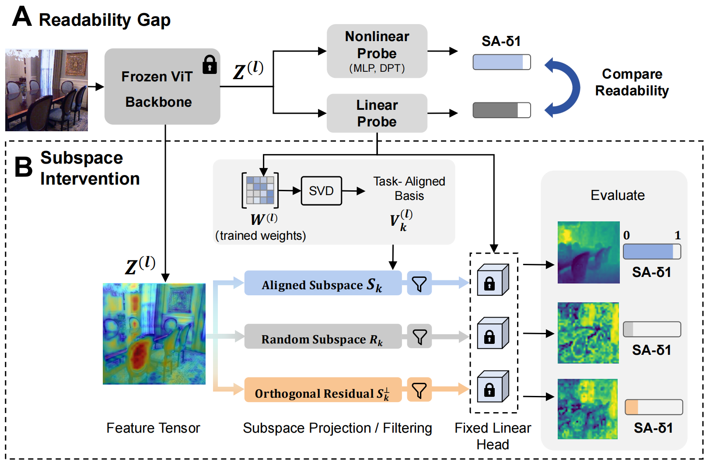

We introduce a controlled subspace intervention framework to investigate how
self-supervised Vision Transformers (ViTs) encode dense geometric information. While linear probing is
widely used to assess geometric representations, it treats features as a black box, failing to
disentangle the underlying topology. To address this issue, we decompose the weights of converged
linear probes to isolate the low-rank subspaces containing explicit geometric signals using
Singular Value Decomposition (SVD). Our perspective yields three key insights:
(1) Pre-training objectives determine how features are encoded — DINOv2 aligns
spatial features for efficient linear extraction, while Masked Autoencoders (MAE) tend to disperse these
signals, requiring a broader spatial context. (2) Explicit geometric representations
are highly compressible, suggesting dense predictive heads could potentially be constrained to low-rank
subspaces with minimal performance loss. (3) The layer-wise task affinity suggests that
geometric precision peaks at intermediate layers before yielding to semantic abstraction in the final
layers. By connecting internal encoding mechanics with downstream performance, these findings provide a
basis for effective feature selection and lightweight decoder design.
The Diagnostic Framework
From black-box probing to inspecting the feature topology
Rather than reading only the accuracy of a downstream probe, we
(A) establish a readability gap with a three-tier probing hierarchy, then (B) perform a
post-hoc subspace intervention that decomposes the converged linear weights to isolate the
directions that carry explicit geometry.

Overview of the framework.(A) Readability Gap: frozen backbone features
Z(l) are evaluated with three tiers (Linear, MLP, DPT) to decouple local
non-linear entanglement from global spatial fragmentation. (B) Subspace Intervention: without
any additional training, we apply SVD to the converged linear weights W to extract a
task-aligned basis Vk; the feature tensor is projected onto the aligned subspace
(Sk), a random subspace (Rk) and the orthogonal residual
(Sk⊥), each read out through the same fixed linear head to isolate
the geometric signal.
A · Readability Gap
Three-tier probing hierarchy
A Linear probe measures explicitly rectified geometry; a token-wise 1×1 MLP
adds point-wise non-linearity (isolating local entanglement); a DPT decoder adds a
global receptive field (isolating spatial fragmentation). The gaps between tiers quantify how
entangled vs. dispersed the geometric signal is.
B · Subspace Intervention
SVD on converged probe weights
We factor W = UΣV⊤ and keep the top-k right
singular vectors as the aligned basis. Projecting features onto Sk,
Rk, or the residual Sk⊥ — then
reading them through the frozen head — attributes any change purely to the geometric
capacity of that subspace.
Key Insights
Three takeaways
01 / ENCODING
Pre-training dictates the format
Self-distillation (DINOv2) aligns explicit geometry into a linearly accessible, low-rank
coordinate system. Masked reconstruction (MAE) disperses the same signal across broader
spatial context, needing a global receptive field to decode.
02 / COMPRESSIBILITY
Geometry is highly compressible
Across every paradigm, explicitly decodable geometry concentrates in a low-rank task-aligned
subspace. Dense predictive heads could be constrained to it with minimal performance loss —
motivating lightweight decoders.
03 / TASK AFFINITY
Geometry peaks in the middle
Geometric precision concentrates in intermediate layers, then declines as deeper layers
shift toward semantic abstraction — revealing a layer-wise affinity that argues against a
terminal-only feature readout.
Results & Analysis
Quantitative results
Table 1 · Linear Readability Gap
Backbone
Performance · SA-δ1 ↑
Accessibility Gaps
Linear
1×1 MLP
DPT
Local Entang.Δ Linear→MLP
Spatial Frag.Δ MLP→DPT
DINOv2-L
0.9157
0.9325
0.9483
+0.0168
+0.0158
iBOT-L
0.8198
0.8376
0.8524
+0.0178
+0.0148
MAE-L
0.6033
0.6390
0.7022
+0.0357
+0.0632
DINOv2 is nearly linearly readable (0.9157 from a linear probe alone), whereas
MAE relies on a global DPT decoder (+0.0989 over linear) — the gain bars (one shared scale)
expose how much each probe tier adds: DINOv2 barely benefits, while MAE's large jumps reveal masked
reconstruction's local entanglement and spatial dispersion. Metric: scale-aware depth accuracy on
NYU Depth v2.
Table 2 · Cross-Layer Energy Allocation
Model
l6
l12
l18
l24
Layer distributionbars vs. 25% uniform (dashed) · σ = spread
DINOv2
17.2
35.8
36.7
10.3
σ 11.5 · concentrated
iBOT
26.9
28.4
22.4
22.3
σ 2.7 · most uniform
MAE
19.5
28.4
32.7
19.4
σ 5.8 · mild peak
Relative geometric contribution Ei (%) for four representative depths (each
row sums to 100%). The bars are read against the dashed 25% uniform line, and σ is the spread
around it — lower σ = more uniform. DINOv2 (σ=11.5) concentrates >72% of
its energy in the intermediate layers (l12, l18) then drops sharply, whereas
iBOT (σ=2.7) hugs the uniform line and MAE (σ=5.8) spreads the signal across depth.
Figures
Analysis gallery
assets/fig2_recovery.pngFig. 2 — recovery curves vs. subspace rank
Fig. 2 · Compressibility. (a) The task-aligned subspace recovers most of the
signal well above the residual/random noise floor — strong redundancy. (b) Normalized to each
model's full-rank baseline, MAE saturates fastest (>98% by k=32), while DINOv2 converges slower,
linearly encoding richer fine-grained geometry.
assets/fig8_stability.pngFig. 8 — subspace similarity across seeds
Fig. 8 · Stability. Subspace similarity across three random probe
initializations. High consistency at low ranks (k ≤ 16) rules out optimization
artifacts; the stochastic tail (k ≥ 64) reflects a lack of stable signal in tail
dimensions.
assets/fig3_qualitative.pngFig. 3 — depth predictions across ranks k = 8 … full rank
Fig. 3 · Qualitative subspace interventions. Depth predictions from the
global linear probe across ranks k. DINOv2 (top) recovers a coherent scene layout at an extremely low
rank (k=8); MAE (middle) needs higher capacity (k ≥ 64) to resolve object boundaries;
iBOT (bottom) is intermediate.
assets/fig4_energy.pngFig. 4 — spectral energy density per singular vector
Fig. 4 · Energy distribution. Spectral-weighted energy density per singular
vector (dashed line = uniform baseline, 0.25). DINOv2 shows multimodal peaks — geometry is
localized in intermediate layers; iBOT and MAE overlap near the uniform baseline, diffusely spreading
the signal across the hierarchy.
assets/fig5_layerwise.jpgFig. 5 — performance vs. layer index and rank
Fig. 5 · Layer-wise subspace analysis. The entanglement gap (linear vs.
non-linear) and the rank-dispersion gap (k=8) reveal a distinct rank-sensitivity transition in
DINOv2's intermediate layers, contrasting with the continuous sensitivity of MAE and iBOT.
Fig. 6 · Qualitative task affinity (DINOv2). Predictions decoded from frozen
features at layers 18, 21 and 24. Surface normals, depth and semantic segmentation peak at
different layers — distinct affinities set by the task objective.
Citation
BibTeX
cite this work
@inproceedings{Zhou2026UnderstandingGR,
title = {Understanding Geometric Representations in Self-Supervised
Vision Transformers via Subspace Intervention},
author = {Zhou, Weichen and Zou, Yawen and Gu, Chunzhi and
Dong, Ran and Xie, Haoran and Zhang, Chao},
booktitle = {Proceedings of the European Conference on Computer Vision (ECCV)},
year = {2026}
}
Acknowledgements
Acknowledgements
This work was supported by JST CREST, Japan, and by JSPS KAKENHI. Our codebase builds largely upon
Probe3D — we thank
the authors for making it available.